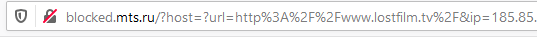

| Ник | Пост | Дата |
|---|---|---|
| devrus(Ruslan) | При открытии выдает ошибку Cloudflare Error 526 Invalid SSL certificate. | 2020-01-08T15:36:15.188Z |
| ValdikSS | На данный момент сайт открывается через все прокси АнтиЗапрета. | 2020-01-08T18:11:07.014Z |
| Lestat(Владимир) | Есть проблема - нет подключения, скорее всего проблема с прокси. | 2020-07-11T20:20:46.275Z |
| ilyaigpetrov(ilyaigpetrov) | Пробовали www.lostfilm.run? | 2020-07-12T06:50:43.000Z |
| ValdikSS | 2020-07-12T09:43:27.527Z | |
| Lestat(Владимир) | Благодарю, не знаю, поменялось что-то или нет, но сейчас все работает на основном сайте. | 2020-07-12T20:36:13.778Z |
| vasya_pupkin(vasya pupkin) |  с остальными сайтами проблем не наблюдалось | 2020-09-16T09:35:57.887Z |
| ilyaigpetrov(ilyaigpetrov) | Используйте http://lostfilm.run – это официальный адрес или зеркало. См. https://github.com/anticensority/runet-censorship-bypass/issues/10#issuecomment-649429006. | 2020-09-16T09:44:24.000Z |
| kirill | :off: | 2020-09-27T10:59:08.177Z |
| dsfwerfwes(asdgdfg) | У меня была такая же проблема с лостфильмом (win10, хром Версия 85.0.4183.121, 64 бит, билайн). | 2020-10-02T21:49:50.981Z |
| Egor2077(Egor) | У меня то же самое на Дом.ру, хотя раньше все работало. Браузер Safari. | 2021-03-20T11:59:40.477Z |
| Evk(Eugene) | работает | 2021-03-20T13:58:46.662Z |
| ValdikSS | Safari не поддерживает шифрование трафика до прокси. Если в браузерах на Chromium и Firefox сайт открывается, а через Safari не открывается никогда, то дело в этом. Используйте другой браузер, либо настройте АнтиЗапрет через VPN. | 2021-03-20T20:43:22.456Z |
{kind=link}
{kind=link}